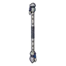
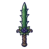

ตุ่นขุดผลึก
มอนธาตุดิน Lv 64–78
เจอที่
| แมพ | โซน | Lv | ภูมิภาค |
|---|---|---|---|
| เหมืองลึกผลึกส้ม | 64–72 | แดนใต้สีแดง | |
| เหมืองลึกผลึกส้ม | ห้องผลึกใหญ่ | 70–72 | แดนใต้สีแดง |
| ทางรางเหมืองแขวน | สถานีรอกร้าง | 71–78 | แดนใต้สีแดง |
| ห้องสูบน้ำเหมืองท่วม | 64–72 | แดนใต้สีแดง | |
| ห้องสูบน้ำเหมืองท่วม | เครื่องสูบน้ำยักษ์ | 70–72 | แดนใต้สีแดง |
| โถงหินจีโอด | 64–72 | แดนใต้สีแดง | |
| โถงหินจีโอด | จีโอดยักษ์ | 70–72 | แดนใต้สีแดง |
| ค่ายคนงานใต้ดิน | 64–72 | แดนใต้สีแดง | |
| ค่ายคนงานใต้ดิน | ปล่องลิฟต์เหมือง | 70–72 | แดนใต้สีแดง |
ค่าสถานะตามเลเวล
| Lv | HP | ATK | DEF | MDEF | EXP | Job |
|---|---|---|---|---|---|---|
| 64 | 23,909 | 131–197 | 26 | 12 | 83 | 62 |
| 71 | 32,186 | 149–223 | 28 | 13 | 91 | 68 |
| 78 | 42,042 | 167–251 | 31 | 14 | 100 | 75 |
ตีด้วยธาตุไหนดี
แรงขึ้น: ไฟ ×1.5 พิษ ×1.25
เบาลง: ลม ×0.5 ดิน ×0.25
วัตถุดิบที่ดรอป
| ของ | โอกาส | |
|---|---|---|
| ตะเกียงหัวตุ่น | 55% | 1 ชิ้น (15% ได้ 2) |
อุปกรณ์ที่ดรอป (6)
| ของ | โอกาส |
|---|---|
| 0.25% | |
 ไม้พลองรอยเท้าหมาป่า | 0.25% |
| ชุดเสือดำ (เสื้อ) | 0.15% |
| ชุดเสือดำ (กางเกง + รองเท้า) | 0.15% |
 ดาบคู่พุ่มหนาม | 0.12% |
| ชุดเสือดำ (แหวนเขี้ยวเสือดำ) | 0.05% |
สกิล
ร่างแข็ง (Lv 25+) · ร่างแข็ง (Lv 60+) · ทุบพื้น (Lv 60+)